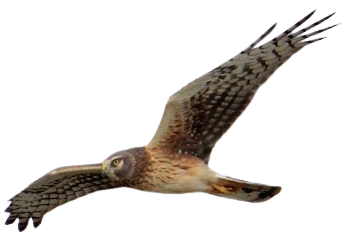
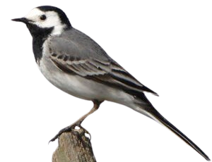
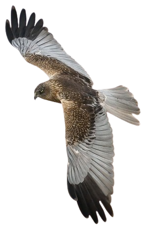
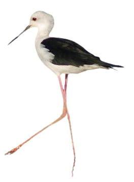
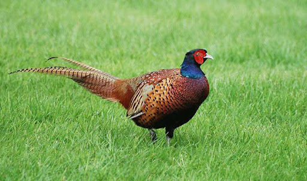
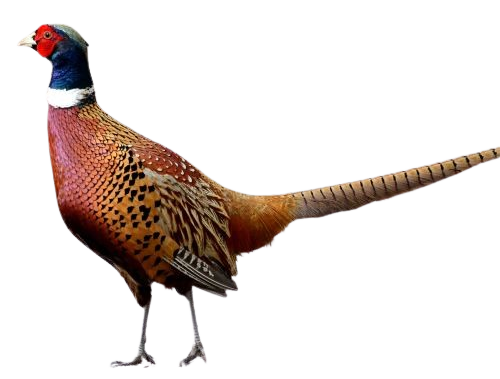
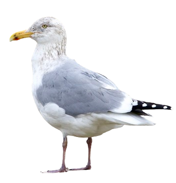
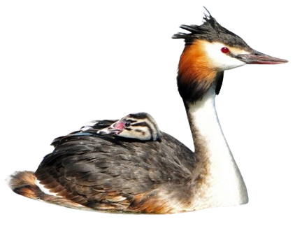
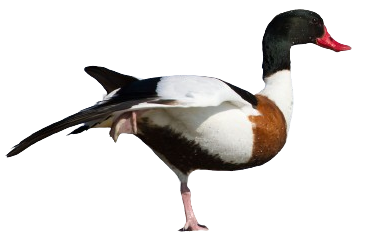

Busard Saint-Martin

Le Busard Saint-Martin fait partie du groupe des busards dits "gris" du fait de la couleur du plumage mâle. Dans l'ouest du domaine paléarctique, on trouve 3 busards gris dont le St-Martin ainsi que le B. cendré et le B. pâle dont les plumages femelle et immature peuvent créer de vrais problèmes d'identification. En effet, les busards font montre d'un fort dimorphisme sexuel. Pour les 3 dont il est question ici, les mâles ont le dessus gris avec du noir en bout d'aile tandis que les femelles arborent un plumage brun strié passe-partout pour des raisons de sécurité au nid.
Le Busard Saint-Martin mâle adulte posé paraît d'un gris-cendre uniforme, à l'exception de la pointe des ailes noire et de la queue plus pâle.
La femelle adulte est entièrement brune dessus, non d'un brun uni, mais avec des zones pâles, en particulier à la tête, au cou et sur les couvertures alaires.

Bergeronnette grise

La Bergeronnette grise est un oiseau anthropophile remarquable par sa silhouette (longue queue et ailes courtes) et ses couleurs. Elle fait partie de ce qu'on appelait autrefois vulgairement les hochequeues. En effet, comme chez ses consœurs, sa longue queue est agitée de mouvements verticaux fréquents. Son plumage est entièrement en noir et blanc et en nuances de gris.
L'adulte nuptial a la tête noire et blanche (arrière de la calotte, nuque, arrière du cou, menton et gorge noirs, front et côtés de la tête et du cou blancs). Une bavette noire occupe la poitrine, en continuité avec le noir de la gorge. L'œil est sombre et le bec noir. Le manteau, le dos et les scapulaires sont gris-cendre uni. Les ailes sont contrastées.

Busard des roseaux

Le Busard des roseaux est la plus grande des 6 espèces de busards qui habitent le continent eurasiatique. Il n'a pas son équivalent sur le continent nord-américain. Comme les autres, il montre un dimorphisme sexuel marqué, vole avec les ailes relevées en V dans les espaces ouverts où il chasse ses proies au sol ou sur l'eau.
Le mâle adulte en plumage complet se reconnaît à son aspect bariolé, brun, gris, blanc, noir... De loin, il paraît brun à tête plus claire. De plus près au posé, la tête a une teinte de fond variable (crème, beige, roussâtre, grise) et est striée de brun. La zone de l'oeil peut être légèrement assombrie. Les parties supérieures (manteau, dos, croupion et couvertures alaires) sont brunes avec plus ou moins de taches claires, surtout sur les couvertures. La poitrine est souvent de la couleur de la tête et striée également.
La femelle adulte est globalement d'un brun soutenu, pouvant paraître presque noir de loin par mauvaise lumière, avec la tête plus claire qui signe l'espèce. La tête est en effet blanc crème avec un bandeau brun passant sur l'oeil. La même teinte se retrouve sur l'avant de l'aile au niveau du bras et souvent aussi vers l'épaule.

Cigogne blanche

La Cigogne blanche est un grand échassier au plumage blanc et noir, sans dimorphisme sexuel. C'est un oiseau bien connu et qui ne passe pas inaperçu dans son environnement.
Le plumage de contour et la queue sont blancs tandis que les ailes sont bicolores. Les rémiges, l'alule, les grandes couvertures et les couvertures primaires supérieures sont noires, le reste blanc. En vue supérieure d'une cigogne en vol, on voit que le noir de l'aile n'est pas homogène, mais que les rémiges primaires internes et les secondaires montrent un net éclaircissement le long du rachis, d'où un aspect strié typique de l'arrière de l'aile. En période nuptiale, des plumes blanches allongées apparaissent à la base du cou.
Le bec, fort et en poignard, est rouge sang, de même que les longues pattes. À la base inférieure du bec, la zone gulaire dénudée est rouge et noire.

Cygne tuberculé

Le Cygne tuberculé est le plus gros de nos anatidés. Sa silhouette nous est familière car c'est un oiseau très présent dans notre environnement, naturel ou non.
L'adulte a le plumage entièrement blanc de neige. Son bec est orange-rouge vif avec l'onglet et les narines noirs. Souvent un peu de rose vers l'onglet. Noir également le triangle entre l'œil et le bec. Les pattes sont noires elles aussi. Le mâle nuptial a un gros tubercule noir à la base du bec devant le front. La femelle l'a réduit.

Échasse blanche

L'échasse blanche a le plumage noir et blanc avec les ailes entièrement noires, ainsi que le haut du dos et l'arrière du cou. Les parties inférieures sont blanches, avec un collier blanc contrastant avec le dos et la nuque noirs.
La tête présente une face blanche, et le sommet de la calotte est noir. Les yeux sont rouges. Le bec long et fin est noir et droit. Les très longues pattes et les doigts sont rougeâtre rose.
Les deux sexes sont presque semblables, mais la femelle est brunâtre alors que le mâle est plus noir et présente des plumes verdâtres brillantes.
Le juvénile est plus clair que l'adulte.

Faisan de Colchide

Le Faisan de Colchide présente un fort dimorphisme sexuel. Le mâle (ou coq), avec sa longue queue et son plumage haut en couleurs, est un oiseau qu'on remarque et qui est de ce fait bien connu du grand public. Cette espèce présente de nombreuses sous-espèces, avec des variantes de plumage caractéristiques de chacune, par exemple avec ou sans collier blanc.
Le corps est tout en nuances de couleurs chaudes allant du beige roussâtre au châtain foncé en passant par des teintes mordorées du plus bel effet. L'aspect d'ensemble sur le terrain est brun-roux. De nombreuses plumes de couverture sont ourlées ou terminées de clair sur le dessus, de brun sombre ou de noir sur les flancs et le dessous, ce qui rompt l'uniformité du plumage.
La tête est remarquable. Elle est de couleur bleue ou verte suivant la lumière, à reflets brillants, et soulignée souvent d'un collier blanc.
La femelle (ou poule) est plus petite, avec une queue relativement plus courte et un plumage cryptique, dans les tons beiges et marqué de sombre, qui la dissimulent parfaitement.

Goéland argenté

Le Goéland argenté de la ssp "argenteus" est le plus petit des deux sous-espèces. Il est court sur pattes, a la tête assez arrondie qui lui donne un aspect "gentil" et son bec est de taille modérée, sachant que, comme chez tous les goélands, le mâle est plus grand et plus robuste que la femelle.
Il a le gris du dessus le plus pâle du groupe "argenté" sus-nommé, à peu près équivalent à celui de la Mouette rieuse. L'oeil à iris ivoire à jaune pâle est entouré d'un cercle orbitaire orange. Le bec est d'un jaune tendant vers l'orange avec une tache rouge vermillon au niveau du gonys. La commissure est de la couleur du bec. Les pattes sont roses.

Grèbe huppé

Le Grèbe huppé est le plus grand de nos grèbes européens. C'est un oiseau plongeur piscivore qui fréquente les plans d'eau bordés de végétation et se distingue aisément par son allure gracieuse et élancée. De loin, son long cou mince et blanc contraste avec sa tête triangulaire foncée.
Une caractéristique marquante réside dans sa calotte noire ornée d'une crête huppée à l'origine de son nom. Les plumes noirâtres qui la composent sont plus ou moins longues en fonction de l'âge de l'individu et de la période. Elles s'élèvent de manière majestueuse au sommet de sa tête et deviennent particulièrement visibles pendant la saison de reproduction.

Tadorne de Belon

Le plus grand des canards de surface en France. Le mâle et la femelle sont sensiblement identiques. La tête et le haut du cou sont verts, le reste du cou blanc. Le bec est rouge, avec une aspérité à la base chez les mâles. Une large bande rousse ceinture la poitrine et le haut du dos. Le milieu du ventre noir précède le reste du dessous blanc. Les faces latérales du dos, noires, encadrent la partie centrale blanche. Les ailes sont bigarrées blanc, noir, vert et roux. La queue blanche est maculée de noir à son extrémité. Les plumes sous-caudales sont rousses, les pattes palmées roses. Le tout donne un gros canard multicolore visible de loin.
En vol, tous les individus paraissent noirs et blancs. Les jeunes sont plus ternes, à dominante grise.